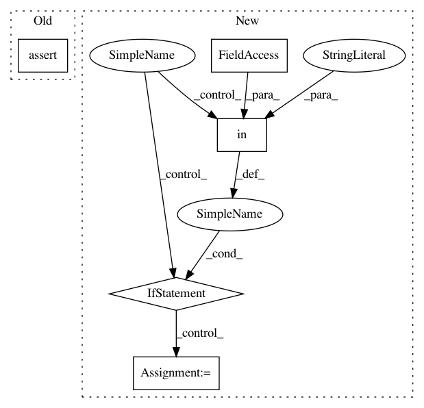

4cd1437dda39ad067f139ecc1d0ab1f41947e1ac,onnx_coreml/_transformers.py,ReshapeInitTensorFuser,__call__,#ReshapeInitTensorFuser#Any#,250
Before Change
continue
if shape_name not in node.input_tensors:
continue
assert len(node.parents) == 0
removed.append(node)
output_name = node.outputs[0]
After Change
if parent.op_type != "Constant":
is_non_constant_parent = True
break
if is_non_constant_parent:
continue
removed.append(node)
output_name = node.outputs[0]
tensor = node.input_tensors[tensor_name]
if "shape" in node.attrs:
shape = tuple(node.attrs["shape"])
else:
shape = node.input_tensors[shape_name] // type: ignore
// ONNX spec supports setting dimension to "0", in which case
// it should be taken from old dimension.
// This isn"t supported in numpy, so don"t transform.
// TODO Should we support this case?
if any([s == 0 for s in shape]):
continue
reshaped_tensor = tensor.reshape(shape)
In pattern: SUPERPATTERN
Frequency: 3
Non-data size: 5
Instances
Project Name: onnx/onnx-coreml
Commit Name: 4cd1437dda39ad067f139ecc1d0ab1f41947e1ac
Time: 2018-04-30
Author: aseem.elec@gmail.com
File Name: onnx_coreml/_transformers.py
Class Name: ReshapeInitTensorFuser
Method Name: __call__
Project Name: open-mmlab/mmdetection
Commit Name: 9d38a278eacd64cfe45ab92054d03731102c3331
Time: 2018-12-11
Author: chenkaidev@gmail.com
File Name: mmdet/datasets/voc.py
Class Name: VOCDataset
Method Name: __init__
Project Name: automl/SMAC3
Commit Name: 5b826a67f0e87bee842d2ad220a7079ad9c86fda
Time: 2016-12-01
Author: marius.rks@googlemail.com
File Name: test/test_smbo/test_smbo.py
Class Name: TestSMBO
Method Name: test_choose_next_2